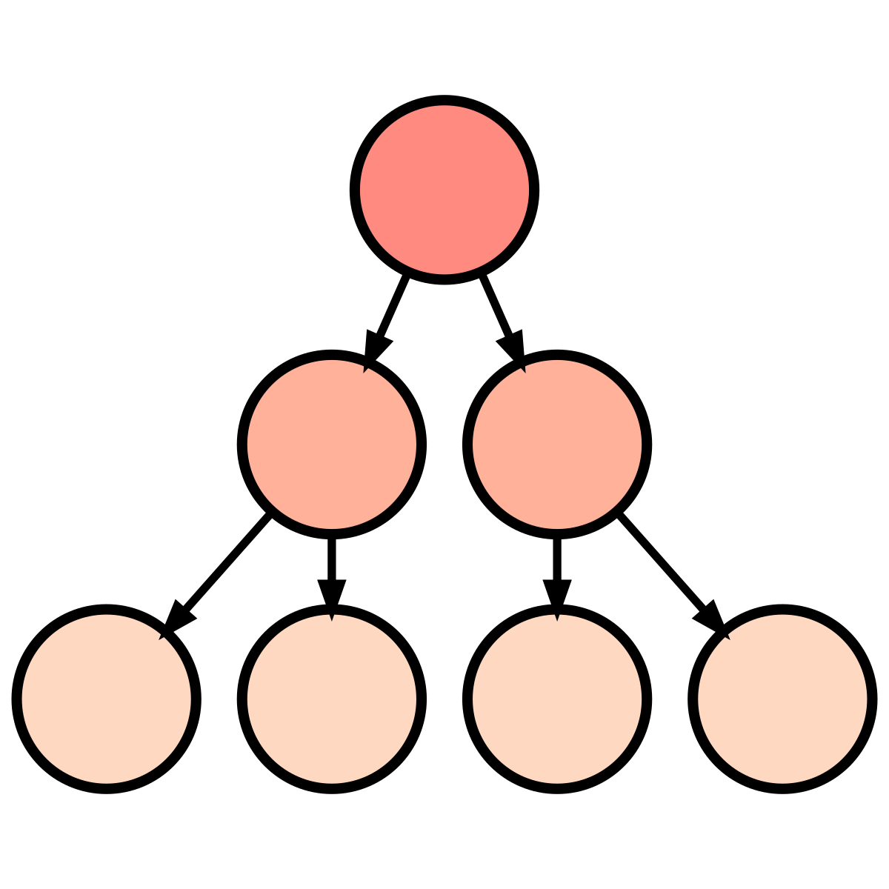

class: center, middle, inverse, title-slide .title[ # <table style="width:100%; border:none; border-collapse:collapse; background:transparent; cellpadding:0; cellspacing:0;"> <tr> <td style="border:none; padding:0; vertical-align:middle; text-align:left;"> <div style="font-size:1.25em; font-weight:bold; line-height:1.1;"> Multilevel Modeling </div> <div style="font-size:1.25em; font-weight:bold; line-height:1.1;"> in Clinical Research </div> </td> <td style="border:none; padding:0; vertical-align:middle; text-align:right;"> <p></p> </td> </tr> </table> ] .subtitle[ ## <small>Concepts and Applications</small> ] .author[ ### Waylon Howard ] .date[ ### Webinar, March 18, 2026 ] --- exclude: true --- --- --- # About me [Waylon Howard](https://wwwaylon.github.io/) (waylon.howard@seattlechildrens.org) - Principal Biostatistician and Quantitative Methodologist at: [*Biostatistics, Epidemiology and Analytics in Research (BEAR)*](https://www.seattlechildrens.org/research/resources/bear) (SCRI) -- - Research methods, statistics, and measurement - Grant writing, analysis planning, and manuscripts - Methodological innovation and applied solutions <style="clear: both;"> .center[ .highlight[ **<span style="color:#FFFFFF;"> I help researchers answer the right questions! </span>** ] ] --- # Preliminaries Slides and material are available at .center[ https://github.com/wwwaylon/chbd-lgm-2025 ] - The talk consists of a combination of slides and hands-on exercises - 💬 Feel free to ask questions anytime! - We will primarily rely on [`R`](https://www.r-project.org/), [`RStudio`](https://www.rstudio.com/products/rstudio/) & [`GitHub`](https://github.com/). **For my research, I typically use Mplus and R (`lmer`).** --- .center[ ## Software for Multilevel Modeling ] .pull-left-45[ <small><small><small> | Software | MLM Module | |----------|------------| | R | `lme4`, `nlme`, `xxM`, `DESeq2` | | SAS | `PROC MIXED` | | SPSS | `MIXED` | | Stata | `xtmixed` / `mixed` | | LISREL | `MULTILEV` | | HLM | Purpose-built, widely cited | | MLwiN | Strong for complex structures | | EQS | Built-in | | S-Plus | Built-in | | SYSTAT | Built-in | | Mplus | SEM + MLM, highly flexible | </small></small></small> ] .pull-right-45[ .center[ <small> .highlight[ **<span style="color:#FFFFFF;"> My Recommendations </span>** ] </small> ] <small> **For research:** <small><small> > **Mplus** for flexibility with SEM and complex models > **R (`lme4`)** for reproducibility and custom extensions </small> No single tool is best for every situation - choose based on **model complexity**, **team expertise**, and **reproducibility needs**. Also consider factors like **collaboration**, and **cost**. </small></small> ] --- ## Many names - same general idea **Model frameworks** <small> > Multilevel models, Hierarchical linear models (HLM), Mixed-effects models, Linear mixed models (LMM), Growth curve models, Random coefficient models </small> **Model components** <small> > Variance components, Random effects / coefficients, Random intercepts and slopes, Varying coefficients, Intercepts- or slopes-as-outcomes, *Cross-level interactions*, *Contextual effects* 👉 **These are all variations of mixed models.** </small> --- ## Plan Today <table class="table table-striped table-hover" style="font-size: 16px; margin-left: auto; margin-right: auto;"> <thead> <tr> <th style="text-align:left;font-weight: bold;color: white !important;background-color: rgba(0, 169, 224, 255) !important;"> Time </th> <th style="text-align:left;font-weight: bold;color: white !important;background-color: rgba(0, 169, 224, 255) !important;"> Segment </th> <th style="text-align:left;font-weight: bold;color: white !important;background-color: rgba(0, 169, 224, 255) !important;"> Key Concepts </th> <th style="text-align:left;font-weight: bold;color: white !important;background-color: rgba(0, 169, 224, 255) !important;"> Slides </th> </tr> </thead> <tbody> <tr> <td style="text-align:left;font-weight: bold;color: rgba(75, 79, 84, 255) !important;"> 0–10 </td> <td style="text-align:left;width: 23%; font-weight: bold;"> Why is this important? </td> <td style="text-align:left;width: 47%; "> Nested data in the real world </td> <td style="text-align:left;"> 1–6 </td> </tr> <tr> <td style="text-align:left;font-weight: bold;color: rgba(75, 79, 84, 255) !important;color: white !important;background-color: rgba(0, 169, 224, 255) !important;"> 10–25 </td> <td style="text-align:left;width: 23%; font-weight: bold;color: white !important;background-color: rgba(0, 169, 224, 255) !important;"> Estimation in Statistical Models </td> <td style="text-align:left;width: 47%; color: white !important;background-color: rgba(0, 169, 224, 255) !important;"> OLS vs ML estimation </td> <td style="text-align:left;color: white !important;background-color: rgba(0, 169, 224, 255) !important;"> 7–15 </td> </tr> <tr> <td style="text-align:left;font-weight: bold;color: rgba(75, 79, 84, 255) !important;"> 25–40 </td> <td style="text-align:left;width: 23%; font-weight: bold;"> How not to handle nested data </td> <td style="text-align:left;width: 47%; "> Traditional methods & limitations </td> <td style="text-align:left;"> 16–25 </td> </tr> <tr> <td style="text-align:left;font-weight: bold;color: rgba(75, 79, 84, 255) !important;color: white !important;background-color: rgba(0, 169, 224, 255) !important;"> 40–55 </td> <td style="text-align:left;width: 23%; font-weight: bold;color: white !important;background-color: rgba(0, 169, 224, 255) !important;"> Empty means models & ICC </td> <td style="text-align:left;width: 47%; color: white !important;background-color: rgba(0, 169, 224, 255) !important;"> Variance decomposition<br>Empty model & ICC </td> <td style="text-align:left;color: white !important;background-color: rgba(0, 169, 224, 255) !important;"> 26–35 </td> </tr> <tr> <td style="text-align:left;font-weight: bold;color: rgba(75, 79, 84, 255) !important;"> 55–85 </td> <td style="text-align:left;width: 23%; font-weight: bold;"> Conditional models & Effect Size </td> <td style="text-align:left;width: 47%; "> Model building & effect size </td> <td style="text-align:left;"> 36–52 </td> </tr> <tr> <td style="text-align:left;font-weight: bold;color: rgba(75, 79, 84, 255) !important;color: white !important;background-color: rgba(0, 169, 224, 255) !important;"> 85–90 </td> <td style="text-align:left;width: 23%; font-weight: bold;color: white !important;background-color: rgba(0, 169, 224, 255) !important;"> Next Steps & Extensions </td> <td style="text-align:left;width: 47%; color: white !important;background-color: rgba(0, 169, 224, 255) !important;"> Extensions & resources </td> <td style="text-align:left;color: white !important;background-color: rgba(0, 169, 224, 255) !important;"> 53–55 </td> </tr> </tbody> </table> --- ## Why multilevel models? .center[ <img src=C:/Users/whowar/Desktop/lmm-2026/slides/img/mlm.png style="width:300px; display:block; margin:-60px auto -30px auto;"> ] <small><small> - Data are clustered ➡️ observations are related - Standard analyses assume **independence** **Example: hospital re-admissions** > *Patients in the same hospital share unmeasured factors.* > *Repeated measurements on the same patient are not independent.* </small></small> <style="clear: both;"> .center[ <small><small> .highlight[ **<span style="color:#FFFFFF;"> Violations of this assumption bias standard errors. </span>** ] </small></small> ] --- ## Kinds of Data Structure .center[ <img src=C:/Users/whowar/Desktop/lmm-2026/slides/img/l1l2.png style="width:600px; display:block; margin:-40px auto -40px auto;"> ] .left[ <small><small> <br> - **Hierarchical (Nested)** repeated tests - students - schools - districts - **Crossed (Non-nested)** observations within participants *and* tasks - **Balanced vs. Unbalanced** Experiments vs. Real-world - **Other Structures** Temporal (time-ordered), Spatial (location-based) ] Once you learn about hierarchical data, you start seeing examples everywhere! <small><small> *Image adapted from Preacher (2010) lecture - thanks Kris.* </small></small></small></small> --- ## 🎯 Estimation in Statistical Models **How do statistical models estimate parameters?** <small><small> | Model | Outcome | Effects | Sampling | |------|---------------------|--------|----------------| | **Linear Model** | **Normal** | **Fixed** | **1 level** | | <span style="color:#A7A9AC;">Generalized Linear Model</span> | <span style="color:#A7A9AC;">Any</span> | <span style="color:#A7A9AC;">Fixed</span> | <span style="color:#A7A9AC;">1 level</span> | | <span style="color:#A7A9AC;">Linear *Mixed* Model</span> | <span style="color:#A7A9AC;">Normal</span> | <span style="color:#A7A9AC;">Fixed + Random</span> | <span style="color:#A7A9AC;">2+ levels</span> | | <span style="color:#A7A9AC;">Generalized Linear *Mixed* Model</span> | <span style="color:#A7A9AC;">Any</span> | <span style="color:#A7A9AC;">Fixed + Random</span> | <span style="color:#A7A9AC;">2+ levels</span> | </small> **🔑 Key question:** > How do we estimate the parameters of these models? We start with Ordinary Least Squares (OLS) </small> --- ## 🎯 Estimation in Statistical Models **Ordinary Least Squares (OLS)** $$ \color{gray}{\text{Linear regression: }} \text{y}_i = \beta_0 + \beta_1 \text{x}_i + \text{e}_i $$ $$ \color{gray}{\text{Residual: }} \text{e}_i = \text{y}_i - \hat{\text{y}}_i $$ $$ \small \color{gray}{\text{OLS chooses coefficients that minimize: }} \sum_{i=1}^{n}(\text{y}_i - \hat{\text{y}}_i)^2 $$ **💡 Core idea** > Find the line that minimizes the total squared prediction error. --- ## 🎯 Estimation in Statistical Models .center[ <img src=C:/Users/whowar/Desktop/lmm-2026/slides/img/ols1_plot.png style="width:400px; display:block; margin:-40px auto -20px auto;"> ] <small> This scatterplot shows the relationship between a predictor **X** and an outcome **Y**. Each orange point represents an observed score. **OLS will search for the line that best predicts these values.** </small> --- ## 🎯 Estimation in Statistical Models .center[ <img src=C:/Users/whowar/Desktop/lmm-2026/slides/img/ols2_plot.png style="width:400px; display:block; margin:-40px auto -20px auto;"> ] <small> **Features of the best-fitting line:** <small> Intercept `\(\beta_0\)`, Slope `\(\beta_1\)`, Residual variance </small> These parameters define the model that best predicts the data. </small> --- ## 🎯 Estimation in Statistical Models .center[ <img src=C:/Users/whowar/Desktop/lmm-2026/slides/img/ols3_plot.png style="width:400px; display:block; margin:-40px auto -20px auto;"> ] <small> A **residual** is the vertical distance to the regression line: `\(\text{e}_i = \text{y}_i - \hat{\text{y}}_i\)` But OLS does **not minimize the raw residuals**. --- ## 🎯 Estimation in Statistical Models **Why Square Residuals?** <small><small> | Strategy | Problem | |----------|---------| | Minimize **sum** of residuals | Positive & negative cancel | | Minimize **sum of absolute** residuals | Difficult to solve | | Minimize **sum of squared** residuals | Works 🏆 ✨ | </small></small> <small> Key benefits: ✅ makes all values positive ✅ penalizes large errors ✅ produces a **closed-form solution** </small> --- ## 🎯 Estimation in Statistical Models .center[ <img src=C:/Users/whowar/Desktop/lmm-2026/slides/img/ols4_plot.png style="width:400px; display:block; margin:-40px auto -20px auto;"> ] `\(\color{grey}{\text{OLS chooses the line that minimizes: }}\sum_{i=1}^{n}(\text{y}_i - \hat{\text{y}}_i)^2\)` --- .center[ <img src="img/ols_squares_zoomed.gif" style="display: block; margin: auto;" /> ] <small> Geometrically: > OLS minimizes the **total area of the residual squares**. </small> --- ## 🎯 Estimation in Statistical Models .center[ <img src=C:/Users/whowar/Desktop/lmm-2026/slides/img/ols_boxes_plot.png style="width:300px; display:block; margin:-40px auto -20px auto;"> ] <small> The squared-error function forms a **smooth quadratic surface.** This means: ✅ there is **one optimal solution** ✅ we can solve it analytically .center[ .highlight[ **<span style="color:#FFFFFF;"> OLS therefore has a closed-form estimator. </span>** ] ] </small> --- ## 🎯 Estimation in Statistical Models **But What Is OLS Really Doing?** <small> > When errors are normally distributed, the OLS estimates of the regression coefficients are identical to the maximum likelihood estimates - minimizing squared residuals and maximizing the normal likelihood are the same problem. To see why, we need to introduce **Maximum Likelihood (ML)**. </small> --- ## 🎯 Estimation in Statistical Models <style="clear: both;"> .center[ .highlight[ **<span style="color:#FFFFFF;"> Maximum Likelihood </span>** ] ] A **probability density function 😏** describes the distribution of the data. $$ \color{grey}{\text{For a normal distribution: }} \large \text{L}_i = {\frac{1}{\sqrt{2 \pi \sigma^2}} \text{e}^{-.5\frac{(\color{#EB7B35}{\text{Y}_i - \mu})^2 }{\color{#EB7B35}{\sigma}^2} }} $$ `\(\text{L}_i\)` measures the relative probability of observing `\(\text{Y}_i\)` given a mean and variance. --- .pull-right-60[ <table class="table table-striped table-hover table-condensed" style="font-size: 13.5px; margin-left: auto; margin-right: auto;"> <thead> <tr> <th style="text-align:left;"> ID </th> <th style="text-align:left;"> x </th> <th style="text-align:left;"> <div style="text-align: center;">L<sub><i>i</i></sub> </div> </th> </tr> </thead> <tbody> <tr> <td style="text-align:left;"> 1 </td> <td style="text-align:left;"> 36.6 </td> <td style="text-align:left;"> 0.010201 </td> </tr> <tr> <td style="text-align:left;"> 2 </td> <td style="text-align:left;"> 41.8 </td> <td style="text-align:left;"> 0.027624 </td> </tr> <tr> <td style="text-align:left;"> 3 </td> <td style="text-align:left;"> 42.6 </td> <td style="text-align:left;"> 0.030908 </td> </tr> <tr> <td style="text-align:left;"> 4 </td> <td style="text-align:left;"> 43.1 </td> <td style="text-align:left;"> 0.032971 </td> </tr> <tr> <td style="text-align:left;"> 5 </td> <td style="text-align:left;"> 43.4 </td> <td style="text-align:left;"> 0.034205 </td> </tr> <tr> <td style="text-align:left;"> 6 </td> <td style="text-align:left;"> 44.2 </td> <td style="text-align:left;"> 0.037444 </td> </tr> <tr> <td style="text-align:left;"> 7 </td> <td style="text-align:left;"> 44.9 </td> <td style="text-align:left;"> 0.040166 </td> </tr> <tr> <td style="text-align:left;"> 8 </td> <td style="text-align:left;"> 46.3 </td> <td style="text-align:left;"> 0.045074 </td> </tr> <tr> <td style="text-align:left;"> 9 </td> <td style="text-align:left;"> 48.6 </td> <td style="text-align:left;"> 0.050658 </td> </tr> <tr> <td style="text-align:left;"> 10 </td> <td style="text-align:left;"> 49.0 </td> <td style="text-align:left;"> 0.051223 </td> </tr> <tr> <td style="text-align:left;color: white !important;background-color: rgba(141, 198, 63, 255) !important;"> 11 </td> <td style="text-align:left;color: white !important;background-color: rgba(141, 198, 63, 255) !important;"> 50.0 </td> <td style="text-align:left;color: white !important;background-color: rgba(141, 198, 63, 255) !important;"> <b style="font-size:16px;">0.052038</b> </td> </tr> <tr> <td style="text-align:left;"> 12 </td> <td style="text-align:left;"> 51.6 </td> <td style="text-align:left;"> 0.051508 </td> </tr> <tr> <td style="text-align:left;"> 13 </td> <td style="text-align:left;"> 54.6 </td> <td style="text-align:left;"> 0.044915 </td> </tr> <tr> <td style="text-align:left;"> 14 </td> <td style="text-align:left;"> 54.8 </td> <td style="text-align:left;"> 0.044264 </td> </tr> <tr> <td style="text-align:left;"> 15 </td> <td style="text-align:left;"> 55.7 </td> <td style="text-align:left;"> 0.041102 </td> </tr> <tr> <td style="text-align:left;"> 16 </td> <td style="text-align:left;"> 57.2 </td> <td style="text-align:left;"> 0.035227 </td> </tr> <tr> <td style="text-align:left;"> 17 </td> <td style="text-align:left;"> 57.6 </td> <td style="text-align:left;"> 0.033589 </td> </tr> <tr> <td style="text-align:left;"> 18 </td> <td style="text-align:left;"> 60.3 </td> <td style="text-align:left;"> 0.022677 </td> </tr> <tr> <td style="text-align:left;"> 19 </td> <td style="text-align:left;"> 60.9 </td> <td style="text-align:left;"> 0.020433 </td> </tr> <tr> <td style="text-align:left;"> 20 </td> <td style="text-align:left;"> 65.3 </td> <td style="text-align:left;"> 0.007888 </td> </tr> </tbody> </table> ] .pull-left-40[ **ML estimation** .small[ Applying the density function gives the relative probability `\(\text{(}L_i\text{)}\)` of each score from this normal distribution. **Complete data:** $$ \text{x } (\mu = 50.42 \text{, } \sigma = 7.65) $$ ] .center[ .highlight[ **<span style="color:#FFFFFF;"> Largest `\(L_i\)` is best! </span>** ] ] ] --- <img src="1-intro_files/figure-html/unnamed-chunk-6-1.png" width="600px" height="600px" style="display: block; margin: auto;" /> --- .pull-right-40[ <table class="table table-striped table-hover table-condensed" style="font-size: 13.5px; margin-left: auto; margin-right: auto;"> <thead> <tr> <th style="text-align:left;"> ID </th> <th style="text-align:left;"> x </th> <th style="text-align:left;"> <div style="text-align: center;">L<sub><i>i</i></sub> </div> </th> <th style="text-align:left;"> <div style="text-align: center;">logL<sub><i>i</i></sub> </div> </th> </tr> </thead> <tbody> <tr> <td style="text-align:left;"> 1 </td> <td style="text-align:left;"> 36.6 </td> <td style="text-align:left;"> 0.010201 </td> <td style="text-align:left;"> -4.585258 </td> </tr> <tr> <td style="text-align:left;"> 2 </td> <td style="text-align:left;"> 41.8 </td> <td style="text-align:left;"> 0.027624 </td> <td style="text-align:left;"> -3.589055 </td> </tr> <tr> <td style="text-align:left;"> 3 </td> <td style="text-align:left;"> 42.6 </td> <td style="text-align:left;"> 0.030908 </td> <td style="text-align:left;"> -3.476754 </td> </tr> <tr> <td style="text-align:left;"> 4 </td> <td style="text-align:left;"> 43.1 </td> <td style="text-align:left;"> 0.032971 </td> <td style="text-align:left;"> -3.412113 </td> </tr> <tr> <td style="text-align:left;"> 5 </td> <td style="text-align:left;"> 43.4 </td> <td style="text-align:left;"> 0.034205 </td> <td style="text-align:left;"> -3.375376 </td> </tr> <tr> <td style="text-align:left;"> 6 </td> <td style="text-align:left;"> 44.2 </td> <td style="text-align:left;"> 0.037444 </td> <td style="text-align:left;"> -3.284921 </td> </tr> <tr> <td style="text-align:left;"> 7 </td> <td style="text-align:left;"> 44.9 </td> <td style="text-align:left;"> 0.040166 </td> <td style="text-align:left;"> -3.214733 </td> </tr> <tr> <td style="text-align:left;"> 8 </td> <td style="text-align:left;"> 46.3 </td> <td style="text-align:left;"> 0.045074 </td> <td style="text-align:left;"> -3.099445 </td> </tr> <tr> <td style="text-align:left;"> 9 </td> <td style="text-align:left;"> 48.6 </td> <td style="text-align:left;"> 0.050658 </td> <td style="text-align:left;"> -2.982664 </td> </tr> <tr> <td style="text-align:left;"> 10 </td> <td style="text-align:left;"> 49.0 </td> <td style="text-align:left;"> 0.051223 </td> <td style="text-align:left;"> -2.97157 </td> </tr> <tr> <td style="text-align:left;color: white !important;background-color: rgba(141, 198, 63, 255) !important;"> 11 </td> <td style="text-align:left;color: white !important;background-color: rgba(141, 198, 63, 255) !important;"> 50.0 </td> <td style="text-align:left;color: white !important;background-color: rgba(141, 198, 63, 255) !important;"> 0.052038 </td> <td style="text-align:left;color: white !important;background-color: rgba(141, 198, 63, 255) !important;"> <b style="font-size:16px;">-2.955783</b> </td> </tr> <tr> <td style="text-align:left;"> 12 </td> <td style="text-align:left;"> 51.6 </td> <td style="text-align:left;"> 0.051508 </td> <td style="text-align:left;"> -2.966023 </td> </tr> <tr> <td style="text-align:left;"> 13 </td> <td style="text-align:left;"> 54.6 </td> <td style="text-align:left;"> 0.044915 </td> <td style="text-align:left;"> -3.102986 </td> </tr> <tr> <td style="text-align:left;"> 14 </td> <td style="text-align:left;"> 54.8 </td> <td style="text-align:left;"> 0.044264 </td> <td style="text-align:left;"> -3.117579 </td> </tr> <tr> <td style="text-align:left;"> 15 </td> <td style="text-align:left;"> 55.7 </td> <td style="text-align:left;"> 0.041102 </td> <td style="text-align:left;"> -3.191692 </td> </tr> <tr> <td style="text-align:left;"> 16 </td> <td style="text-align:left;"> 57.2 </td> <td style="text-align:left;"> 0.035227 </td> <td style="text-align:left;"> -3.345936 </td> </tr> <tr> <td style="text-align:left;"> 17 </td> <td style="text-align:left;"> 57.6 </td> <td style="text-align:left;"> 0.033589 </td> <td style="text-align:left;"> -3.393553 </td> </tr> <tr> <td style="text-align:left;"> 18 </td> <td style="text-align:left;"> 60.3 </td> <td style="text-align:left;"> 0.022677 </td> <td style="text-align:left;"> -3.786393 </td> </tr> <tr> <td style="text-align:left;"> 19 </td> <td style="text-align:left;"> 60.9 </td> <td style="text-align:left;"> 0.020433 </td> <td style="text-align:left;"> -3.890587 </td> </tr> <tr> <td style="text-align:left;"> 20 </td> <td style="text-align:left;"> 65.3 </td> <td style="text-align:left;"> 0.007888 </td> <td style="text-align:left;"> -4.842415 </td> </tr> </tbody> </table> ] .pull-left-40[ **Maximum Likelihood** .small[ Multiple each `\((L_i)\)` to get sample likelihood. <small><small><small>0.00000000000000000000000000000163666415977258</small></small></small> <small><small>Fit of this data to `\(\mu\)` = 50.42, `\(\sigma\)` = 7.65</small></small> <small>**To avoid small numbers, we take the log of the likelihood.**</small> Add each `\(logL_i\)` to get sample loglikelihood. -68.58 **Model Fit Indices use this!** `\(\small \text{AIC} = -2 \times logL+2k\)` `\(\small \text{ BIC} = -2 \times logL+k \times logN\)` ] ] --- .pull-left-60[ <table class="table table-striped table-hover table-condensed" style="font-size: 11px; margin-left: auto; margin-right: auto;"> <thead> <tr> <th style="text-align:left;"> ID </th> <th style="text-align:left;"> x </th> <th style="text-align:left;"> μ = 30 </th> <th style="text-align:left;"> μ = 40 </th> <th style="text-align:left;"> μ = 50 </th> <th style="text-align:left;"> μ = 60 </th> <th style="text-align:left;"> μ = 70 </th> </tr> </thead> <tbody> <tr> <td style="text-align:left;"> 1 </td> <td style="text-align:left;"> 36.6 </td> <td style="text-align:left;"> -3.326 </td> <td style="text-align:left;"> -3.053 </td> <td style="text-align:left;color: black !important;background-color: transparent !important;"> -4.487 </td> <td style="text-align:left;"> -7.627 </td> <td style="text-align:left;"> -12.474 </td> </tr> <tr> <td style="text-align:left;"> 2 </td> <td style="text-align:left;"> 41.8 </td> <td style="text-align:left;"> -4.142 </td> <td style="text-align:left;"> -2.982 </td> <td style="text-align:left;color: black !important;background-color: transparent !important;"> -3.528 </td> <td style="text-align:left;"> -5.781 </td> <td style="text-align:left;"> -9.74 </td> </tr> <tr> <td style="text-align:left;"> 3 </td> <td style="text-align:left;"> 42.6 </td> <td style="text-align:left;"> -4.309 </td> <td style="text-align:left;"> -3.012 </td> <td style="text-align:left;color: black !important;background-color: transparent !important;"> -3.422 </td> <td style="text-align:left;"> -5.538 </td> <td style="text-align:left;"> -9.361 </td> </tr> <tr> <td style="text-align:left;"> 4 </td> <td style="text-align:left;"> 43.1 </td> <td style="text-align:left;"> -4.419 </td> <td style="text-align:left;"> -3.036 </td> <td style="text-align:left;color: black !important;background-color: transparent !important;"> -3.361 </td> <td style="text-align:left;"> -5.391 </td> <td style="text-align:left;"> -9.129 </td> </tr> <tr> <td style="text-align:left;"> 5 </td> <td style="text-align:left;"> 43.4 </td> <td style="text-align:left;"> -4.487 </td> <td style="text-align:left;"> -3.053 </td> <td style="text-align:left;color: black !important;background-color: transparent !important;"> -3.326 </td> <td style="text-align:left;"> -5.306 </td> <td style="text-align:left;"> -8.992 </td> </tr> <tr> <td style="text-align:left;"> 6 </td> <td style="text-align:left;"> 44.2 </td> <td style="text-align:left;"> -4.675 </td> <td style="text-align:left;"> -3.105 </td> <td style="text-align:left;color: black !important;background-color: transparent !important;"> -3.241 </td> <td style="text-align:left;"> -5.085 </td> <td style="text-align:left;"> -8.634 </td> </tr> <tr> <td style="text-align:left;"> 7 </td> <td style="text-align:left;"> 44.9 </td> <td style="text-align:left;"> -4.849 </td> <td style="text-align:left;"> -3.159 </td> <td style="text-align:left;color: black !important;background-color: transparent !important;"> -3.176 </td> <td style="text-align:left;"> -4.9 </td> <td style="text-align:left;"> -8.33 </td> </tr> <tr> <td style="text-align:left;"> 8 </td> <td style="text-align:left;"> 46.3 </td> <td style="text-align:left;"> -5.222 </td> <td style="text-align:left;"> -3.293 </td> <td style="text-align:left;color: black !important;background-color: transparent !important;"> -3.071 </td> <td style="text-align:left;"> -4.556 </td> <td style="text-align:left;"> -7.747 </td> </tr> <tr> <td style="text-align:left;"> 9 </td> <td style="text-align:left;"> 48.6 </td> <td style="text-align:left;"> -5.906 </td> <td style="text-align:left;"> -3.585 </td> <td style="text-align:left;color: black !important;background-color: transparent !important;"> -2.971 </td> <td style="text-align:left;"> -4.063 </td> <td style="text-align:left;"> -6.862 </td> </tr> <tr> <td style="text-align:left;"> 10 </td> <td style="text-align:left;"> 49 </td> <td style="text-align:left;"> -6.035 </td> <td style="text-align:left;"> -3.645 </td> <td style="text-align:left;color: black !important;background-color: transparent !important;"> -2.963 </td> <td style="text-align:left;"> -3.987 </td> <td style="text-align:left;"> -6.718 </td> </tr> <tr> <td style="text-align:left;"> 11 </td> <td style="text-align:left;"> 50 </td> <td style="text-align:left;"> -6.368 </td> <td style="text-align:left;"> -3.808 </td> <td style="text-align:left;color: black !important;background-color: transparent !important;"> -2.954 </td> <td style="text-align:left;"> -3.808 </td> <td style="text-align:left;"> -6.368 </td> </tr> <tr> <td style="text-align:left;"> 12 </td> <td style="text-align:left;"> 51.6 </td> <td style="text-align:left;"> -6.936 </td> <td style="text-align:left;"> -4.103 </td> <td style="text-align:left;color: black !important;background-color: transparent !important;"> -2.976 </td> <td style="text-align:left;"> -3.556 </td> <td style="text-align:left;"> -5.843 </td> </tr> <tr> <td style="text-align:left;"> 13 </td> <td style="text-align:left;"> 54.6 </td> <td style="text-align:left;"> -8.118 </td> <td style="text-align:left;"> -4.773 </td> <td style="text-align:left;color: black !important;background-color: transparent !important;"> -3.135 </td> <td style="text-align:left;"> -3.203 </td> <td style="text-align:left;"> -4.978 </td> </tr> <tr> <td style="text-align:left;"> 14 </td> <td style="text-align:left;"> 54.8 </td> <td style="text-align:left;"> -8.203 </td> <td style="text-align:left;"> -4.823 </td> <td style="text-align:left;color: black !important;background-color: transparent !important;"> -3.151 </td> <td style="text-align:left;"> -3.185 </td> <td style="text-align:left;"> -4.926 </td> </tr> <tr> <td style="text-align:left;"> 15 </td> <td style="text-align:left;"> 55.7 </td> <td style="text-align:left;"> -8.591 </td> <td style="text-align:left;"> -5.058 </td> <td style="text-align:left;color: black !important;background-color: transparent !important;"> -3.231 </td> <td style="text-align:left;"> -3.112 </td> <td style="text-align:left;"> -4.699 </td> </tr> <tr> <td style="text-align:left;"> 16 </td> <td style="text-align:left;"> 57.2 </td> <td style="text-align:left;"> -9.268 </td> <td style="text-align:left;"> -5.479 </td> <td style="text-align:left;color: black !important;background-color: transparent !important;"> -3.397 </td> <td style="text-align:left;"> -3.021 </td> <td style="text-align:left;"> -4.352 </td> </tr> <tr> <td style="text-align:left;"> 17 </td> <td style="text-align:left;"> 57.6 </td> <td style="text-align:left;"> -9.455 </td> <td style="text-align:left;"> -5.598 </td> <td style="text-align:left;color: black !important;background-color: transparent !important;"> -3.447 </td> <td style="text-align:left;"> -3.003 </td> <td style="text-align:left;"> -4.266 </td> </tr> <tr> <td style="text-align:left;"> 18 </td> <td style="text-align:left;"> 60.3 </td> <td style="text-align:left;"> -10.789 </td> <td style="text-align:left;"> -6.471 </td> <td style="text-align:left;color: black !important;background-color: transparent !important;"> -3.86 </td> <td style="text-align:left;"> -2.955 </td> <td style="text-align:left;"> -3.757 </td> </tr> <tr> <td style="text-align:left;"> 19 </td> <td style="text-align:left;"> 60.9 </td> <td style="text-align:left;"> -11.102 </td> <td style="text-align:left;"> -6.682 </td> <td style="text-align:left;color: black !important;background-color: transparent !important;"> -3.968 </td> <td style="text-align:left;"> -2.961 </td> <td style="text-align:left;"> -3.661 </td> </tr> <tr> <td style="text-align:left;"> 20 </td> <td style="text-align:left;"> 65.3 </td> <td style="text-align:left;"> -13.588 </td> <td style="text-align:left;"> -8.416 </td> <td style="text-align:left;color: black !important;background-color: transparent !important;"> -4.952 </td> <td style="text-align:left;"> -3.194 </td> <td style="text-align:left;"> -3.143 </td> </tr> <tr> <td style="text-align:left;"> </td> <td style="text-align:left;"> </td> <td style="text-align:left;"> </td> <td style="text-align:left;"> </td> <td style="text-align:left;color: black !important;background-color: transparent !important;"> </td> <td style="text-align:left;"> </td> <td style="text-align:left;"> </td> </tr> <tr> <td style="text-align:left;"> <b style="font-size:12px;"></b> </td> <td style="text-align:left;"> <b style="font-size:12px;"></b> </td> <td style="text-align:left;"> <b style="font-size:12px;">-139.79</b> </td> <td style="text-align:left;"> <b style="font-size:12px;">-87.13</b> </td> <td style="text-align:left;color: white !important;background-color: rgba(141, 198, 63, 255) !important;"> <b style="font-size:12px;">-68.62</b> </td> <td style="text-align:left;"> <b style="font-size:12px;">-84.23</b> </td> <td style="text-align:left;"> <b style="font-size:12px;">-133.98</b> </td> </tr> </tbody> </table> ] .pull-right-40[ <small> **ML estimation as an audition process** <small><small> > We calculate the log-likelihood for every observation under each candidate μ, then sum them up. The total at the bottom of each column is that candidate's total log-likelihood score - **its audition result**. - Here, the highest log-likelihood (least negative) wins! </small></small> </small> ] --- .center[ <img src="img/ols_ml_derivative.gif" style="display: block; margin: auto;" /> ] <small><small> > SSR is embedded inside the log-likelihood given errors are normal and independent with constant variance, so both methods locate the same optimal `\(\beta\)`. </small></small> --- ## 🎯 Estimation in Statistical Models **Why Move Beyond OLS?** OLS works only for: - Normal outcomes - One outcome at a time - Independent observations - Listwise deletion with missing data --- ## 🎯 Estimation in Statistical Models **Maximum likelihood allows us to estimate:** ✅ multilevel models ✅ generalized models (binary, count, etc.) ✅ models with missing data (FIML) ✅ multiple outcomes simultaneously > ML is the general estimation framework for modern statistical models. We will use it! --- ## 🎯 Estimation in Statistical Models **ML in Multilevel Models** Multilevel models estimate: - Fixed effects - Random effects - Variance components These parameters are estimated using **ML** or **REML**. --- ## 🎯 Estimation in Statistical Models **ML vs. Restricted/Residual ML (REML)** <small><small> | Method | Use Case | Pros / Notes | |--------|----------|--------------| | **ML** | Comparing models with **different fixed effects** | Random effects estimates may be slightly biased downward | | **REML** | Comparing models with the **same fixed effects**, or interpreting random effects | Provides unbiased estimates of random effects var/covar<br><br> Cannot compare models with different fixed effects | ✅ Changing fixed effects? - Use ML to compare ✅ Changing random effects only? - Use REML to compare ✅ Final model for reporting? - Refit with REML for unbiased variance estimates. </small></small> --- ## How to handle nested data? --- ## How to handle nested data? Methods fall into three general categories based on how they handle nestedness. -- - ⚠️ **Ignore:** disaggregation, aggregation - 😕 **Control:** ANCOVA, separate regressions, adjusting the results, fixed effects approach - 🔍 **Model:** *Modeling* nestedness -- > In fact, methods have shifted from *controlling clustering* (attempting to remove its influence) to **modeling it as something worth studying**! 🙌 --- ## 🙈 🙉 🙊 What is disaggregation? --- ## 🙈 🙉 🙊 What is disaggregation? > Disaggregation means .highlight[**<span style="color:#FFFFFF;">moving variables to a lower level</span>**] as if there is no clustering <small>(see [Hox, J., Moerbeek, M., & Van de Schoot, R., 2017](https://biostats.bepress.com/cgi/viewcontent.cgi?article=1001&context=bioconductor)).</small> - **The risk:** Inflated sample size and underestimated standard errors (false positives). --- ## 🙈 🙉 🙊 What is disaggregation? .center[ <img src=C:/Users/whowar/Desktop/lmm-2026/slides/img/disaggregation_plot.png style="width:600px; display:block; margin:-40px auto -20px auto;"> ] <small> - Level-1 units are the unit of analysis. - Level-1 and level-2 predictors are included as if they were ordinary independent variables. </small> --- ## 😳 Not recommended <small> > .highlight[**<span style="color:#FFFFFF;">Violates the independence assumption</span>**] which can lead to standard errors that are severely biased (usually underestimated). - **Result:** Inflated Type I error rates and overconfident conclusions. > .highlight[**<span style="color:#FFFFFF;">Neglects between-cluster variation</span>**], effectively treating all clusters as identical and failing to model the unique intercepts or slopes associated with each group. - **Result:** Lost insights into group-level effects and potentially misleading fixed effects estimates. </small> --- ## 🙈 🙉 🙊 What is disaggregation? .center[ .pull-left-40[ <table class="table" style="font-size: 14px; margin-left: auto; margin-right: auto;"> <thead> <tr> <th style="text-align:left;"> group </th> <th style="text-align:right;"> x </th> <th style="text-align:right;"> y </th> </tr> </thead> <tbody> <tr> <td style="text-align:left;"> 1 </td> <td style="text-align:right;"> -9.1 </td> <td style="text-align:right;"> 6.7 </td> </tr> <tr> <td style="text-align:left;"> 1 </td> <td style="text-align:right;"> 20.5 </td> <td style="text-align:right;"> 9.7 </td> </tr> <tr> <td style="text-align:left;"> 1 </td> <td style="text-align:right;"> 36.7 </td> <td style="text-align:right;"> 8.9 </td> </tr> <tr> <td style="text-align:left;"> 2 </td> <td style="text-align:right;"> 13.1 </td> <td style="text-align:right;"> 6.4 </td> </tr> <tr> <td style="text-align:left;"> 2 </td> <td style="text-align:right;"> 24.8 </td> <td style="text-align:right;"> 8.3 </td> </tr> <tr> <td style="text-align:left;"> 2 </td> <td style="text-align:right;"> 21.7 </td> <td style="text-align:right;"> 5.0 </td> </tr> <tr> <td style="text-align:left;"> 3 </td> <td style="text-align:right;"> 47.9 </td> <td style="text-align:right;"> 4.3 </td> </tr> <tr> <td style="text-align:left;"> 3 </td> <td style="text-align:right;"> 45.5 </td> <td style="text-align:right;"> 6.6 </td> </tr> <tr> <td style="text-align:left;"> 3 </td> <td style="text-align:right;"> 34.9 </td> <td style="text-align:right;"> 4.6 </td> </tr> <tr> <td style="text-align:left;"> 4 </td> <td style="text-align:right;"> 45.1 </td> <td style="text-align:right;"> 2.1 </td> </tr> <tr> <td style="text-align:left;"> 4 </td> <td style="text-align:right;"> 84.1 </td> <td style="text-align:right;"> 5.3 </td> </tr> <tr> <td style="text-align:left;"> 4 </td> <td style="text-align:right;"> 26.3 </td> <td style="text-align:right;"> 1.0 </td> </tr> <tr> <td style="text-align:left;"> 5 </td> <td style="text-align:right;"> 80.9 </td> <td style="text-align:right;"> 0.1 </td> </tr> <tr> <td style="text-align:left;"> 5 </td> <td style="text-align:right;"> 61.5 </td> <td style="text-align:right;"> 0.8 </td> </tr> <tr> <td style="text-align:left;"> 5 </td> <td style="text-align:right;"> 77.4 </td> <td style="text-align:right;"> 5.5 </td> </tr> </tbody> </table> ] .pull-right-60[ .left[ <small> **Example (Nested/Grouped Data)** - **x** = predictor, **y** = outcome - **5 groups**, showing first 3 rows - 80 individuals per group (*N* = 400) - **Think:** students in classrooms, patients in hospitals, repeated measures per person `$$\text{y}_i = \beta_0 + \beta_1 \text{x}_i + \text{e}_i$$` </small> ] ] ] --- ## 🙈 🙉 🙊 What is disaggregation? <small><small> **R code:** <pre style="font-size:0.8em;"> pooled_lm <- lm(y ~ x, data = df) summary(pooled_lm) </pre> Table: Pooled OLS Regression with Centered Predictor |term | estimate| std.error| statistic| p.value| |:-----------|--------:|---------:|---------:|-------:| |(Intercept) | 6.392| 0.181| 35.38| 0.000| |x_c | 0.001| 0.006| 0.09| 0.928| > In a linear regression predicting Y from X (mean-centered), the intercept was **6.392**, representing the expected *Y* at the mean of *X*. The slope for *X* was **0.001**, which was not statistically significant, *t*(398) = 0.09, *p* = 0.928. .highlight[**<span style="color:#FFFFFF;">This analysis assumes that groups have no influence; the more group membership actually affects Y, the more misleading this result becomes</span>**]. </small></small> --- ## 🙈 🙉 🙊 What is disaggregation? .center[ <img src=C:/Users/whowar/Desktop/lmm-2026/slides/img/grouped_residual_plot.png style="width:600px; display:block; margin:-40px auto -20px auto;"> ] <small> **Knowing the group matters!** - ⚠️ `\(\text{e}_i\)` = individual + group variation </small> --- ## 🙈 🙉 🙊 What is disaggregation? .center[ .pull-left-40[ <table class="table" style="font-size: 14px; margin-left: auto; margin-right: auto;"> <thead> <tr> <th style="text-align:left;"> group </th> <th style="text-align:right;"> x </th> <th style="text-align:right;"> y </th> <th style="text-align:left;"> resid </th> </tr> </thead> <tbody> <tr> <td style="text-align:left;"> 1 </td> <td style="text-align:right;"> -9.1 </td> <td style="text-align:right;"> 6.7 </td> <td style="text-align:left;"> <span style=" color: white !important;border-radius: 4px; padding-right: 4px; padding-left: 4px; background-color: rgba(141, 198, 63, 255) !important;">0.4</span> </td> </tr> <tr> <td style="text-align:left;"> 1 </td> <td style="text-align:right;"> 20.5 </td> <td style="text-align:right;"> 9.7 </td> <td style="text-align:left;"> <span style=" color: white !important;border-radius: 4px; padding-right: 4px; padding-left: 4px; background-color: rgba(141, 198, 63, 255) !important;">3.3</span> </td> </tr> <tr> <td style="text-align:left;"> 1 </td> <td style="text-align:right;"> 36.7 </td> <td style="text-align:right;"> 8.9 </td> <td style="text-align:left;"> <span style=" color: white !important;border-radius: 4px; padding-right: 4px; padding-left: 4px; background-color: rgba(141, 198, 63, 255) !important;">2.5</span> </td> </tr> <tr> <td style="text-align:left;"> 2 </td> <td style="text-align:right;"> 13.1 </td> <td style="text-align:right;"> 6.4 </td> <td style="text-align:left;"> <span style=" color: white !important;border-radius: 4px; padding-right: 4px; padding-left: 4px; background-color: rgba(141, 198, 63, 255) !important;">0</span> </td> </tr> <tr> <td style="text-align:left;"> 2 </td> <td style="text-align:right;"> 24.8 </td> <td style="text-align:right;"> 8.3 </td> <td style="text-align:left;"> <span style=" color: white !important;border-radius: 4px; padding-right: 4px; padding-left: 4px; background-color: rgba(141, 198, 63, 255) !important;">1.9</span> </td> </tr> <tr> <td style="text-align:left;"> 2 </td> <td style="text-align:right;"> 21.7 </td> <td style="text-align:right;"> 5.0 </td> <td style="text-align:left;"> <span style=" color: white !important;border-radius: 4px; padding-right: 4px; padding-left: 4px; background-color: rgba(235, 123, 53, 255) !important;">-1.4</span> </td> </tr> <tr> <td style="text-align:left;"> 3 </td> <td style="text-align:right;"> 47.9 </td> <td style="text-align:right;"> 4.3 </td> <td style="text-align:left;"> <span style=" color: white !important;border-radius: 4px; padding-right: 4px; padding-left: 4px; background-color: rgba(235, 123, 53, 255) !important;">-2.1</span> </td> </tr> <tr> <td style="text-align:left;"> 3 </td> <td style="text-align:right;"> 45.5 </td> <td style="text-align:right;"> 6.6 </td> <td style="text-align:left;"> <span style=" color: white !important;border-radius: 4px; padding-right: 4px; padding-left: 4px; background-color: rgba(141, 198, 63, 255) !important;">0.2</span> </td> </tr> <tr> <td style="text-align:left;"> 3 </td> <td style="text-align:right;"> 34.9 </td> <td style="text-align:right;"> 4.6 </td> <td style="text-align:left;"> <span style=" color: white !important;border-radius: 4px; padding-right: 4px; padding-left: 4px; background-color: rgba(235, 123, 53, 255) !important;">-1.7</span> </td> </tr> <tr> <td style="text-align:left;"> 4 </td> <td style="text-align:right;"> 45.1 </td> <td style="text-align:right;"> 2.1 </td> <td style="text-align:left;"> <span style=" color: white !important;border-radius: 4px; padding-right: 4px; padding-left: 4px; background-color: rgba(235, 123, 53, 255) !important;">-4.3</span> </td> </tr> <tr> <td style="text-align:left;"> 4 </td> <td style="text-align:right;"> 84.1 </td> <td style="text-align:right;"> 5.3 </td> <td style="text-align:left;"> <span style=" color: white !important;border-radius: 4px; padding-right: 4px; padding-left: 4px; background-color: rgba(235, 123, 53, 255) !important;">-1.1</span> </td> </tr> <tr> <td style="text-align:left;"> 4 </td> <td style="text-align:right;"> 26.3 </td> <td style="text-align:right;"> 1.0 </td> <td style="text-align:left;"> <span style=" color: white !important;border-radius: 4px; padding-right: 4px; padding-left: 4px; background-color: rgba(235, 123, 53, 255) !important;">-5.4</span> </td> </tr> <tr> <td style="text-align:left;"> 5 </td> <td style="text-align:right;"> 80.9 </td> <td style="text-align:right;"> 0.1 </td> <td style="text-align:left;"> <span style=" color: white !important;border-radius: 4px; padding-right: 4px; padding-left: 4px; background-color: rgba(235, 123, 53, 255) !important;">-6.3</span> </td> </tr> <tr> <td style="text-align:left;"> 5 </td> <td style="text-align:right;"> 61.5 </td> <td style="text-align:right;"> 0.8 </td> <td style="text-align:left;"> <span style=" color: white !important;border-radius: 4px; padding-right: 4px; padding-left: 4px; background-color: rgba(235, 123, 53, 255) !important;">-5.6</span> </td> </tr> <tr> <td style="text-align:left;"> 5 </td> <td style="text-align:right;"> 77.4 </td> <td style="text-align:right;"> 5.5 </td> <td style="text-align:left;"> <span style=" color: white !important;border-radius: 4px; padding-right: 4px; padding-left: 4px; background-color: rgba(235, 123, 53, 255) !important;">-0.9</span> </td> </tr> </tbody> </table> ] .pull-left-60[ .left[ <small> **Where the bias shows up:** <small> The model **<span style="color:#8DC63F;">overpredicts</span>** some groups and **<span style="color:#EB7B35;">underpredicts</span>** others. > Residual variance is inflated but the **SE of the slope is too low** because OLS treats all 400 points as independent. Accounting for strong within-group correlation shrinks the effective sample size from 400 to 12! 😲 $$ \small \text{SE}(\hat{\beta}) = \sqrt{\frac{\sigma^2 \times \color{#A7A9AC}{\text{VIF}}}{\sum_{i=1}^{n} (x_i - \bar{x})^2}} \text{, where} \color{#A7A9AC}{\text{VIF}} = 1 + (n_j - 1)\rho $$ Our estimated SE was **0.006**, but adjusting for groups it should be **0.03**. </small></small> ] ] ] --- ## 🔗 What is aggregation? --- ## 🔗 What is aggregation? .center[ <img src=C:/Users/whowar/Desktop/lmm-2026/slides/img/aggregation_plot.png style="width:600px; display:block; margin:-40px auto -20px auto;"> ] <small> - Level-2 units are the unit of analysis. - **Massive loss of information!** 😲 - The results cannot be generalized to level-1 (*ecological fallacy*). </small> --- ## 🔗 What is aggregation? <small><small> **R code:** <pre style="font-size:0.8em;"> agg_lm <- lm(y_mean ~ x_mean, data = group_means) </pre> Table: Aggregated Regression (Group Means) |term | estimate| std.error| statistic| p.value| |:-----------|--------:|---------:|---------:|-------:| |(Intercept) | 6.392| 0.333| 19.20| 0.000| |x_mean | -0.100| 0.015| -6.43| 0.008| > In a linear regression predicting **group-mean Y** from the **group-mean X** (both grand mean-centered). The slope for *X* was **-0.1**, which was statistically significant, *t*(3) = -6.43, *p* = 0.008, with a large effect size of `\(\text{R}^2\)` = 0.93. .highlight[**<span style="color:#FFFFFF;">This analysis is at the group level, and cannot be assumed to apply to individuals within those groups</span>**]. </small></small> --- ## 🛠 The fixed effects approach? --- ## 🛠 The fixed effects approach? **Include group as a fixed effect via dummy coding.** <small> - Separate intercept for each group - Slopes equal (unless interactions added) - Many parameters (50 groups = 49 dummy codes) 😟 <small> > **Imagine 5 specific hospitals** (Seattle Children's, CHOP, and so on) and we chose these hospitals deliberately because we want to study *these* hospitals specifically. Our estimates tell us how much each hospital's intercept differs from **the reference hospital**, and .highlight[**<span style="color:#FFFFFF;">we never intend to say anything beyond these 5 hospitals anyway</span>**]. Because slopes are fixed (parallel lines), the effect of *X* represents the common within-hospital relationship across all hospitals. </small></small> --- ## 🛠 The fixed effects approach? <small><small> **R code:** <pre style="font-size:0.8em;"> fixed_lm <- lm(y ~ x + factor(group), data = df) </pre> Table: Fixed-effects Regression (dummy codes) |term | estimate| std.error| statistic| p.value| |:--------------|--------:|---------:|---------:|-------:| |(Intercept) | 8.1| 0.211| 38.4| 0| |x | 0.1| 0.004| 23.6| 0| |factor(group)2 | -2.9| 0.307| -9.4| 0| |factor(group)3 | -6.4| 0.327| -19.5| 0| |factor(group)4 | -9.4| 0.363| -25.8| 0| |factor(group)5 | -12.2| 0.395| -30.9| 0| This approach absorbs between-group variation and focuses on within-group associations, producing more realistic SEs than naive pooled OLS. </small></small> --- ## 🛠 The fixed effects approach? **1️⃣ No bias from omitted group effects** <small> - The over/under-prediction problem from pooled OLS goes away because each group gets its own intercept. </small> **2️⃣ No design-effect inflation from clustering** <small> - The ICC is controlled by the group terms </small> **3️⃣ Effective sample size is 396 after adjustment.** <small> .center[ *Assumes fixed slopes unless you add interactions.* ] </small> --- ## 📊 ANCOVA approach? --- ## 📊 ANCOVA approach? .center[ <img src=C:/Users/whowar/Desktop/lmm-2026/slides/img/ancova_plot.png style="width:600px; display:block; margin:-40px auto -20px auto;"> ] <small> **Same model - different interpretation and motivation.** <small> - Cannot model varying slopes across groups - Cannot include level-2 predictors of group effects - Group differences are controlled, not modeled </small></small> --- ## 🧩 Post-adjustment? --- ## 🧩 Post-adjustment? **If nesting biases standard errors, adjust them directly.** <small><small> **R code:** <pre style="font-size:0.8em;"> pooled_lm <- lm(y ~ x_c, data = df) cluster_se <- sandwich::vcovCL(pooled_lm, cluster = df$group, type = "HC1") </pre> Table: Fixed-effects Regression with Cluster-Robust SEs |term | estimate| std.error| t_value| p_value| |:-----------|--------:|---------:|-------:|-------:| |(Intercept) | 6.392| 1.115| 5.73| 0.000| |x_c | 0.001| 0.024| 0.02| 0.982| - The new SE = **0.02** up from **0.006** - Does **not model cluster-specific effects** - Generally **not recommended** for multilevel data </small></small> --- ## 🔀 Separate regressions? --- ## 🔀 Separate regressions? .center[ <img src=C:/Users/whowar/Desktop/lmm-2026/slides/img/seperate_plot.png style="width:600px; display:block; margin:-40px auto -20px auto;"> ] **Analyze each level-2 unit separately.** - 5 groups = 5 models --- .center[ ## 🔀 Seperate regressions? <small> **5 separate regressions ➡️ get the variance across groups** ] <small> .pull-left-45[ Table: Separate Regressions per Group: Intercepts and Slopes |group | intercept| slope| |:-----|---------:|-----:| |1 | 7.98| 0.11| |2 | 5.76| 0.09| |3 | 1.27| 0.11| |4 | -1.70| 0.11| |5 | -3.27| 0.09| ] .pull-right-45[ Table: Variance and Covariance Across Groups (equal weight) | I_Var| S_Var| IS_Cov| |------:|-------:|------:| | 22.995| 0.00017| 0.007| ] </small></small> --- ## 🔀 Separate regressions? - Examine variance of intercepts & slopes - All clusters are weighted equally - Does **not partition variance** - Involves estimating a **large number of parameters!** > 50 hospitals = 50 separate regressions = 500 parameters - this requires a ton of data! 😔 --- ## 🤨 Which Effect Is Correct? .center[ <img src=C:/Users/whowar/Desktop/lmm-2026/slides/img/paradox_plot.png style="width:600px; display:block; margin:-40px auto -20px auto;"> ] <small> **What happens with the same data can be confusing.** > Ignoring clustering changes the estimated relationship. <style="clear: both;"> .center[ .highlight[ **<span style="color:#FFFFFF;"> We need a model that separates within- and between-group effects. </span>** ] ] </small> --- ## <img src="C:/Users/whowar/Desktop/lmm-2026/slides/img/cfa_icon_emoji.png"style="width:60px; display:inline-block; margin-left:-10px; vertical-align:-12px;"> The Solution: Multilevel Models --- ## <img src="C:/Users/whowar/Desktop/lmm-2026/slides/img/cfa_icon_emoji.png"style="width:60px; display:inline-block; margin-left:-10px; vertical-align:-12px;"> The Solution: Multilevel Models .center[ <img src=C:/Users/whowar/Desktop/lmm-2026/slides/img/mlm_plot.png style="width:600px; display:block; margin:-40px auto -20px auto;"> ] <small> .center[ **Multilevel models do something different:** they *simultaneously* model variation **within** and **between** clusters. ] </small> --- ## <img src="C:/Users/whowar/Desktop/lmm-2026/slides/img/cfa_icon_emoji.png"style="width:60px; display:inline-block; margin-left:-10px; vertical-align:-12px;"> The Solution: Multilevel Models <small> **Model the structure - don't ignore it, don't destroy it.** *All the approaches so far fall short in some way:* - **Disaggregation:** <small>Easy but biased; treats all observations as exchangeable</small> - **Aggregation:** <small>Only higher level data; different questions</small> - **Dummy codes:** <small>Assumes *one* shared story across clusters, unwieldy</small> - **Post-adjustment:** <small>Corrects bias but ignores cluster variation</small> - **Separate regressions:** <small>Parameter-hungry and can't generalize</small> </small> --- ## <img src="C:/Users/whowar/Desktop/lmm-2026/slides/img/cfa_icon_emoji.png"style="width:60px; display:inline-block; margin-left:-10px; vertical-align:-12px;"> The Solution: Multilevel Models <small> **Model dependency across observations** <small> - Longitudinal, clustered, or cross-classified data? ✅ No problem! - Tailor your model to the **sources of correlation** in your data </small> **Include categorical or continuous predictors at any level** <small> - Time-varying, person-level, or group-level predictors - Explore **why** observations are correlated, don’t just control for it </small> **Handle unbalanced or missing data** <small> - Not every person needs the same number of measurements - Missing data? ✅ No problem! </small> </small> --- class: center, middle, inverse ## Questions? 🤔 .font120[ 📧 waylon.howard@seattlechildrens.org ] Next: *Diving into Multilevel Models (MLM)*